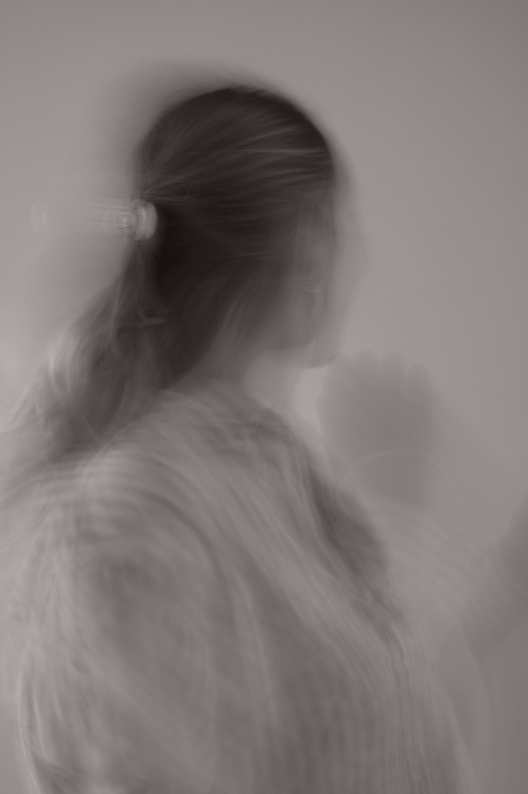
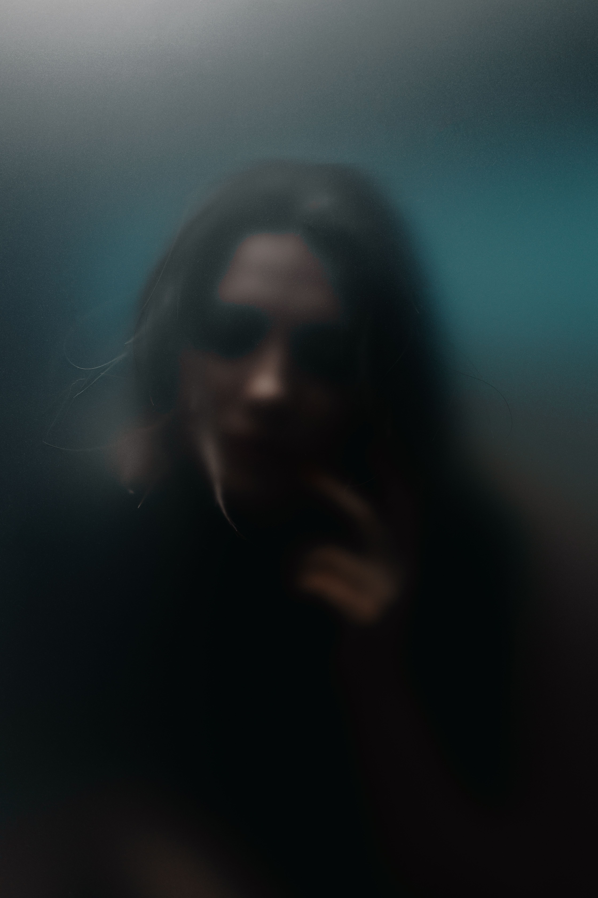
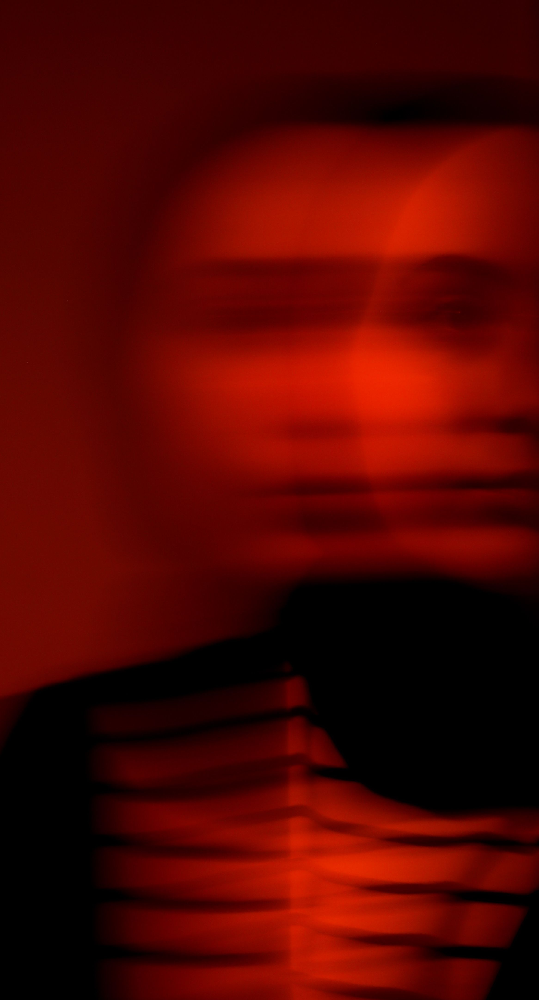
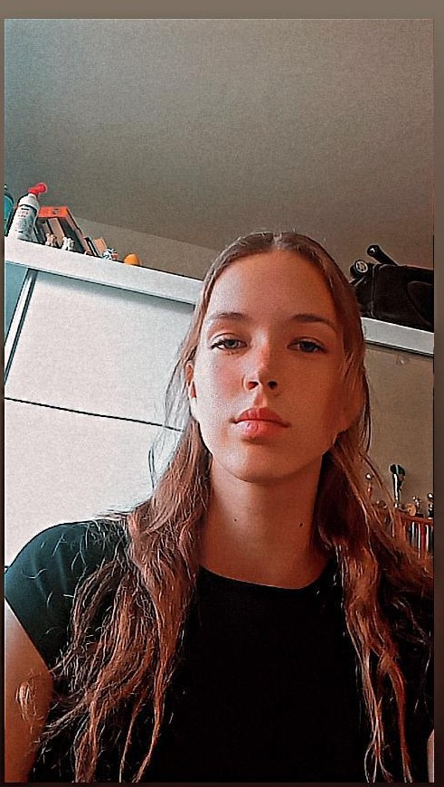
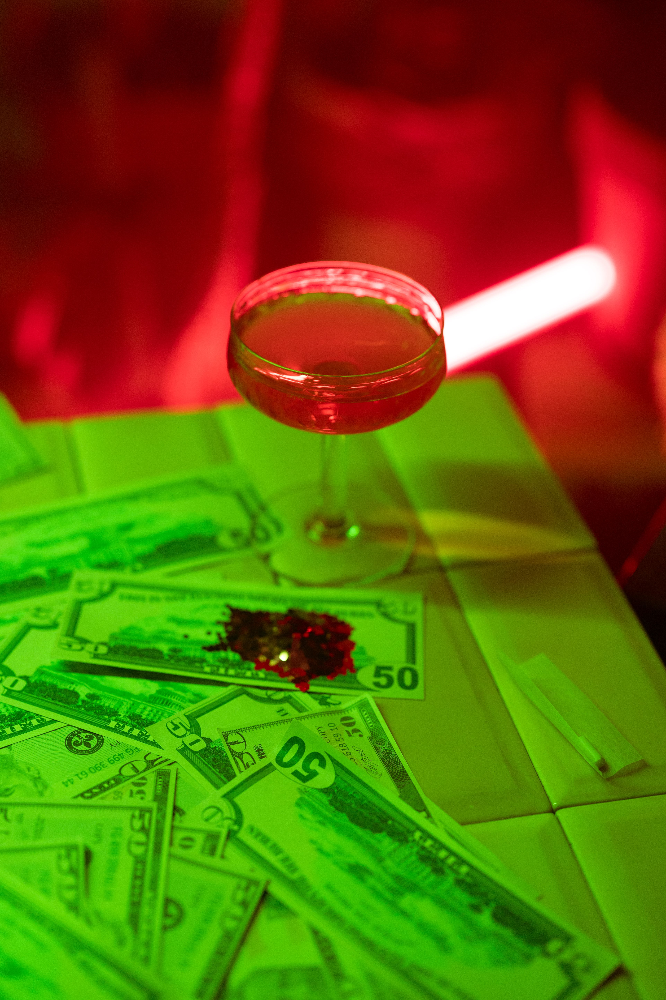

Návrh pokročilého kódu, tvorba systémov a hlboké porozumenie digitálnej logike.
Využitie moderných technologických prostredí na budovanie vysoko odolných riešení.
Precízna, konštruktívna a štruktúrovaná tvorba odborných textov či dokumentácie.
Orientácia v spletitých procesoch, legislatíve a nastavení systémových pravidiel.
Analytické štúdium optiky, materiálov a reálnych mechanizmov okolitého sveta.
Budovanie fyzickej disciplíny, vytrvalosti a odstraňovanie slabostí.
Návrh a úspešná prezentácia projektu aplikujúceho technologické inovácie v prostredí štátnej justície (NSS SR).
Samostatný vývoj, kompletná architektúra a správa funkčnej tréningovej aplikácie.
Vývoj vlastných aplikácií, digitálnych riešení a tréningových systémov zo Screenu / WT designu.
skúsenosti s vedením ľudí a budovaním fyzickej pripravenosti.
Limitovaný čas pri paralelnom riadení a vývoji viacerých náročných projektov naraz.
Hľadanie ideálnej rovnováhy medzi striktnou systémovou logikou a potrebnou flexibilitou.
Orientácia na precíznosť a bezchybnosť riešení, ktorá ma občas vedie k zbytočnému prehlbovaniu detailov.
Výzva udržať absolútnu efektivitu a time-management pri obrovskom množstve záujmov.
Tvorba bezpečných a vysoko efektívnych riešení pre štátnu správu.
Pokročilá automatizácia procesov a vylepšovanie digitálnej architektúry.
Synergia moderných technológií, práva, analytiky a praktického dopadu.
napredovanie v oblasti inžinierskeho myslenia, programovania a analýzy dát, s cieľom prinášať efektívne a inovatívne tech-riešenia.

Zaujal ťa môj web, chceš prediskutovať nápady alebo sa len prepojiť? Pokojne mi napíš: